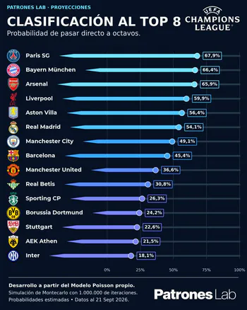
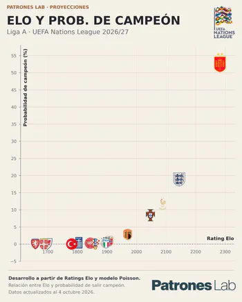
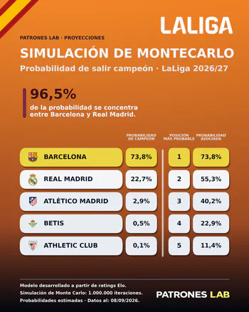

Лига чемпионов 2026/27 · Прогноз очков
Проекция очков в конце этапа лиги с Пуассоном и Монте-Карло, показывающая медиану и интервалы процентилей 25–75 и 5–95.
Смотрите пост ↗Проекция очков в конце этапа лиги с Пуассоном и Монте-Карло, показывающая медиану и интервалы процентилей 25–75 и 5–95.
Смотрите пост ↗
Эволюция прогнозируемых окончательных позиций до третьего тура посредством миллиона симуляций с Пуассоном и Монте-Карло.
Смотрите пост ↗
Тепловая карта прогнозируемых финальных позиций команд LaLiga с использованием миллиона симуляций Монте-Карло.
Смотрите пост ↗
Моделирование с Пуассоном и Монте-Карло для оценки вероятности попадания в топ-8, плей-офф и вылета в Лиге чемпионов.
Смотрите пост ↗
Сравнение рейтинга Эло, прогнозируемых очков и диапазонов смоделированных результатов для каждой команды.
Смотрите пост ↗
Гистограммы смоделированных точек для изучения наиболее частых результатов соревнований.
Смотрите пост ↗
Сравнение итоговых позиций с использованием процентилей, чтобы показать наиболее вероятный диапазон результатов.
Смотрите пост ↗
Презентация модели Пуассона и моделирования Монте-Карло для оценки результатов и классификации.
Смотрите пост ↗
Сообщение LinkedIn о симуляциях. Конкретный контент ожидает проверки.
Смотрите пост ↗
Эволюция предполагаемых позиций команд по дням соревнований.
Смотрите пост ↗
Модель количества забитых голов с использованием моделирования Пуассона и Монте-Карло для прогнозирования результатов Лиги чемпионов.
Посмотреть проект в разработке ↗
Сравнение рейтинга Эло и предполагаемой вероятности победы в Лиге наций для каждой команды.
Смотрите пост ↗
Шансы на прохождение различных этапов соревнования, от группового этапа до финала.
Смотрите пост ↗
Презентация имитационной модели для анализа вероятностей в Лиге наций УЕФА.
Смотрите пост ↗
Анализ воздушной активности на Балеарских островах на основе общедоступных данных AENA.
Смотрите пост ↗
Моделирование вероятностей победы в группах, преодоления плей-офф и завоевания титула.
Посмотреть проект ↗
Вероятности финальных позиций обновлены с учетом новых результатов и рейтингов Эло.
Смотрите пост ↗
Публикация по моделированию LaLiga 2026/27. Подробности ожидают проверки.
Смотрите пост ↗
Моделирование сценариев для оценки вероятностей позиций и окончательных результатов LaLiga.
Посмотреть проект в разработке ↗
LaLiga Публикация сценария на 2026/27 год. Подробности ожидают проверки.
Смотрите пост ↗
Применение DBSCAN для обнаружения кластеризации и нетипичных операций в транзакционных данных.
Смотрите пост ↗
Изучение поездок на такси в Чикаго для выявления временных, территориальных и экономических закономерностей.
Смотрите пост ↗
Модель классификации для анализа транзакционных операций и сигналов, связанных с мошенничеством.
Смотрите пост ↗
Презентация Patrones Lab и его проектов анализа данных, моделей и визуализации.
Смотрите пост ↗
Модель, сравнивающая методы классификации для изучения экономического ущерба от метеорологических явлений.
Посмотреть проект в разработке ↗
Панель мониторинга расходов с поставщиками для изучения эволюции, категорий и географического распределения.
Посмотреть проект ↗
Панель рейтингов Spotify для анализа воспроизведений, эволюции и распространения по странам.
Посмотреть проект в разработке ↗
Обновлённые шансы сборных выиграть чемпионат мира и возможные пары соперников в финале.
Посмотреть публикацию ↗
Моделирование четвертьфинальных пар и расчёт шансов сборных пройти дальше по турнирной сетке.
Посмотреть публикацию ↗
Расчёт вероятностей выхода в полуфинал и финал, а также победы в турнире.
Посмотреть публикацию ↗
Шансы сборных пройти в следующие раунды и выиграть турнир с учётом результатов 1/16 финала.
Посмотреть публикацию ↗
Прогноз выхода в каждый следующий раунд по результатам, известным на тот момент.
Посмотреть публикацию ↗
Имитационная модель для оценки вероятностей продвижения и чемпионства каждой команды.
Посмотреть проект ↗
Сравнение аргентинских игроков с использованием процентилей, рассчитанных по позиции и показателям каждые 90 минут.
Смотрите пост ↗
Визуальное сравнение индивидуальных выступлений на чемпионате мира в Катаре с использованием процентильных радаров.
Посмотреть проект ↗
Как действия игроков с мячом меняли остроту атак в финале между Аргентиной и Францией.
Посмотреть публикацию ↗Статья о футболе и вероятностях в матче Аргентина-Франция в Катаре 2022.
Читать статью ↗
Модель оценивает вероятность гола для каждого удара на чемпионате мира в Катаре.
Открыть проект ↗Анализ угрозы, которую создавали действия игроков с мячом на ЧМ-2022 в Катаре.
Открыть проект ↗
Интерактивная информационная панель для изучения спроса на поездки на такси и маршрутов в Чикаго.
Смотрите пост ↗
Карта концентрации поездок в разные районы Чикаго, подготовленная на основе открытых данных.
Смотрите пост ↗
Анализ районов отправления и назначения, маршрутов и пространственной концентрации такси в Чикаго.
Смотрите пост ↗Карта районов с большей активностью, а также потоков отправления и назначения в зарегистрированных поездках.
Посмотреть проект ↗Интерактивная панель мониторинга для изучения деятельности такси, тарифов и маршрутов в Чикаго.
Посмотреть проект ↗Анализ того, как зарегистрированные поездки различаются по дням, времени, расстоянию и скорости.
Смотрите пост ↗Статья о сети городских такси Чикаго на основе открытых данных.
Читать статью ↗Анализ спроса, маршрутов и тарифов на поездки на такси сообщается в Чикаго.
Посмотреть проект ↗
Анализ цен в зависимости от местоположения, удаленности от центра и характеристик районов.
Посмотреть проект ↗
Модель, позволяющая различать относительно дорогие и дешевые варианты размещения в каждом типе номеров.
Посмотреть проект ↗
Сравнение цен и территориальное распределение жилья Airbnb в Лондоне.
Смотрите пост ↗Статья о ценах на жилье Airbnb в Лондоне и их территориальном распределении.
Читать статью ↗Изучение цен, типов размещения, доступности и различий между районами Лондона.
Посмотреть проект ↗Анализ пассажиров, связности и сезонности в аэропортах Балеарских островов.
Смотрите пост ↗Статья о туризме на Балеарских островах на основе открытых данных AENA.
Читать статью ↗Анализ воздушного движения на Майорке, Ибице и Менорке на основе общедоступных данных AENA.
Посмотреть проект ↗Группировка по плотности для выявления нетипичных транзакций и возможных моделей мошенничества.
Посмотреть проект ↗Контролируемая классификация транзакций для оценки риска мошенничества и интерпретации соответствующих сигналов.
Посмотреть проект ↗
Сегментация операций с помощью K-средств для изучения нетипичного поведения, связанного с мошенничеством.
Посмотреть проект ↗